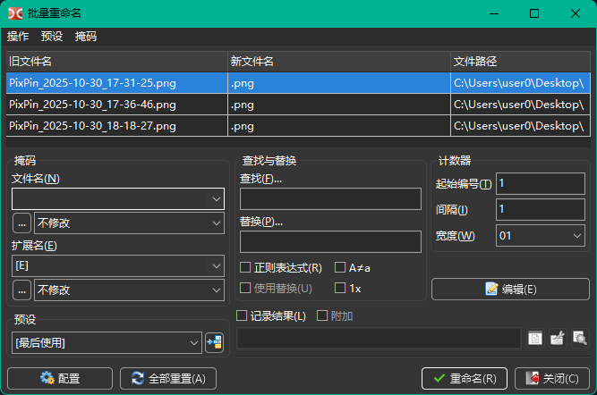
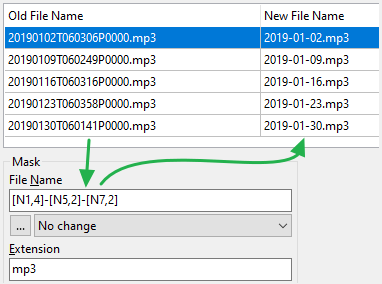
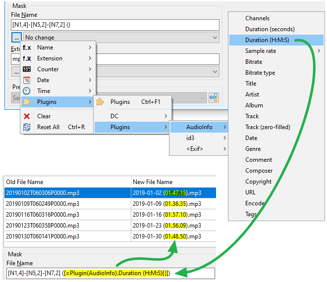
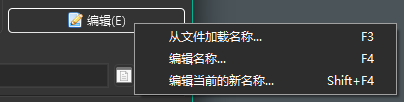
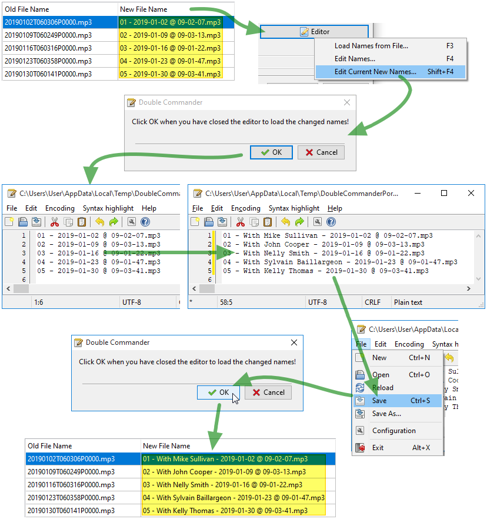
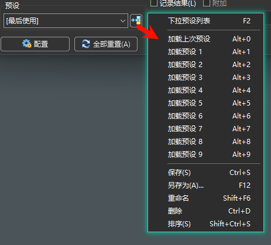
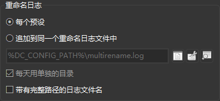

批量重命名工具允许我们使用不同的方法一次重命名多个选定的文件。
假设我们下载了一组播客 MP3 文件。
我们可能想给每个文件一个有意义的名称。
这时候批量重命名工具就会非常有用，因为它可以帮助我们在一次操作中重命名多个文件。
我们会在面板中选择要重命名的元素。
然后通过以下任一方式调用批量重命名工具：
这将打开如下所示的批量重命名工具对话窗口：

在顶部我们可以看到一个表格，其中显示了我们从源面板选择的文件，每行一个文件，这些文件将要被重命名。我们可以使用拖放或 Shift+方向键 重新排序文件列表。要从列表中移除文件，我们可以使用 Del 键（在删除所有文件后，Double Commander 将关闭批量重命名工具）。
该表格有三列：
| 批量重命名工具文件名预览表格 | |
|---|---|
| 列名 | 描述 |
旧文件名 | 该行表示的文件当前的名称 |
新文件名 | 确认重命名后的新文件名 |
文件路径 | 文件当前的位置 |
我们的操作思路是通过一系列调整，直到 新文件名 列显示我们想要的新文件名。
然后我们将按下 重命名 按钮来实际重命名文件。
我们有多种工具可以用来生成想要的新文件名。
| 可用工具 | |
|---|---|
| 类别 | 描述 |
占位符 | 使用文件名的当前部分、其属性或内容来生成新名称的部分 |
文件列表 | 一个包含名称的文本文件，每行一个，按顺序应用到每个文件 |
修改器 | 修改上述元素生成的最终新名称中的字符 |
我们在左侧标有 模版 的框中定义占位符。
如我们所见，我们可以定义用于组成新名称的 文件名 和 扩展名。
这些占位符定义在方括号中。
通常，每个占位符会返回一个字符串，该字符串将成为我们要创建的文件名或其扩展名的一部分。
我们可以在一行中定义多个占位符，新文件名的部分将是所有这些占位符的连接结果。
基本占位符如下：
对于这两个占位符，我们可以包含一些占位符来限定要使用的文件名和/或扩展名的字符范围。
让我们看一个基于以下示例文件的结果表：

| 可用占位符 | ||
|---|---|---|
| 占位符 | 描述 | 示例 |
[Nx] | 文件名中第 x 个位置的字符 | [N9] = T |
[N-x] | 同上，但从文件名的末尾开始计算 | [N-5] = P |
[Nx:y] | 文件名中从位置 x 到 y 的字符范围 | [N5:6] = 01 |
[N-x:-y] | 同上，但从文件名的末尾开始计算 | [N-6:-7] = 06 |
[Nx:-y] | 同上，但起始位置从头部计算，结束位置从末尾计算 | [N10:-6] = 060306 |
[N-x:y] | 同上，但起始位置从末尾计算，结束位置从头部计算 | [N-16:6] = 01 |
[Nx,y] | 从位置 x 开始，长度为 y 个字符的范围 | [N10,6] = 060306 |
[N-x,y] | 同上，但从末尾开始计算，向左选取 y 个字符 | [N-8,4] = 0603 |
[Ex] | 扩展名中第 x 个位置的字符 | [E1] = m |
[E-x] | 同上，但从扩展名的末尾开始计算 | [E-1] = 3 |
[Ex:y] | 扩展名中从位置 x 到 y 的字符范围 | [E2:3] = p3 |
[E-x:-y] | 同上，但从扩展名的末尾开始计算 | [E-3:-2] = mp |
[Ex:-y] | 同上，但起始位置从头部计算，结束位置从末尾计算 | [E1:-2] = mp |
[E-x:y] | 同上，但起始位置从末尾计算，结束位置从头部计算 | [E-2:3] = p3 |
[Ex,y] | 从位置 x 开始，长度为 y 个字符的范围 | [E1,3] = mp3 |
[E-x,y] | 同上，但从末尾开始计算，向左选取 y 个字符 | [E-1,2] = p3 |
为了确保我们理解了这个概念，这里有一个例子，我们把文件名的模版设置为 [N1,4]-[N5,2]-[N7,2]
我们可以看到 新文件名 列已经按照上面描述的替换规则更新了。

以下是一些其他占位符，仍然使用同样的示例文件：
| 其他占位符 | ||
|---|---|---|
| 占位符 | 描述 | 示例 |
[A] | 代表完整的文件名，包括完整路径、目录分隔符、扩展名、冒号和点号 | [A] =完整文件名 |
[A...] | 可以像之前那样指定范围：[Ax]、[Ax:y]、[A-x:-y] 等 | [A-9:-5] = P0000 |
[Y] | 文件日期的年份（最后 2 位数字） | [Y] = 19 |
[YYYY] | 年份（4 位数字） | [YYYY] = 2019 |
[M] | 文件日期的月份数字，原样显示 | [M] = 1 |
[MM] | 月份数字，如果需要会用零补齐至 2 位 | [MM] = 01 |
[MMM] | 月份的缩写，如“jan”、“feb”、“mar”等 | [MMM] = Jan |
[MMMM] | 完整的月份名称，如“january”、“february”等 | [MMMM] = January |
[D] | 文件日期的天数，原样显示 | [D] = 2 |
[DD] | 天数，如果需要会用零补齐至 2 位 | [DD] = 02 |
[DDD] | 星期缩写，如“mon”、“tue”、“wed”等 | [DDD] = Wed |
[DDDD] | 完整的星期名称，如“monday”、“tuesday”等 | [DDDD] = Wednesday |
[h] | 文件时间的小时数，原样显示 | [h] = 9 |
[hh] | 小时数，如果需要会用零补齐至 2 位 | [hh] = 09 |
[n] | 文件时间的分钟数，原样显示 | [n] = 2 |
[nn] | 分钟数，如果需要会用零补齐至 2 位 | [nn] = 02 |
[s] | 文件时间的秒数，原样显示 | [s] = 7 |
[ss] | 秒数，如果需要会用零补齐至 2 位 | [ss] = 07 |
[G] | 即时生成的 GUID 格式： {XXXXXXXX-XXXX-XXXX-XXXX-XXXXXXXXXXXX} | [G] =16 字节的 GUID |
[Px] | 直接命名完整路径中的第 x 级目录（从根目录开始数） | [P2] = TechPodcast |
[P-x] | 直接命名完整路径中的第 x 级目录（从文件名开始数） | [P-2] = Download |
[C] | 使用“计数器”框的参数为每个迭代自动递增的计数器（也支持负数） | [C] =每个文件的递增数字 |
[V:hint] | 用户定义的变量“hint”，将在实际重命名过程中提示用户输入 | [V:Guest] = 提示输入Guest 的值 |
[[] | 按原样插入左方括号 | [[] = [ |
[]] | 按原样插入右方括号 | []] = ] |
这里是另一个例子，我们使用了一些上述占位符，将模版设置为
[C] - [YYYY]-[MM]-[DD] @ [hh]-[nn]-[ss]

随着使用频率的增加，我们很快就能从记忆中直接输入所需的占位符！
在此之前，幸运的是，我们可以点击每个模版下方的按钮，然后访问一个弹出菜单，它将帮助我们根据需要自动输入占位符。

我们还可以使用内容插件的占位符。
它会从文件中提取所选定的字段，并将其用作我们想要的新名称的一部分。
下面的示例使用多媒体插件提取 MP3 播客文件的时长，并将其加在括号中放入文件名中：

我们还可以使用包含文件名列表的文本文件来重命名我们的文件。
默认该文本文件的每一行包含一个新文件名（包括扩展名），并按顺序应用到对应位置的文件。
这个列表可以是：
你还可以从剪贴板加载文件名列表，要使用这个功能，你需要打开热键设置，切换到“批量重命名工具”类别，并为 cm_LoadNamesFromClipboard 命令设置热键。
如果我们已经有这样的文件，我们将点击 编辑 按钮并选择 从文件加载名称...。

然后我们将被提示选择我们的文件列表。
如果文件的行数与要重命名的元素数量相同，我们将在 新文件名 列中看到每个文件的新文件名。
只有在我们点击 重命名 按钮时才会进行实际的重命名操作。
类似于上面描述的现有列表，Double Commander 可以让我们动态创建这个文件列表。
点击 编辑器 按钮，然后选择 编辑名称... 将使工具基于原始文件名创建一个临时文本文件，该文件将像上一点一样使用。
与上面相同，只是列表中的文件名来自当前的 新文件名 列。
当占位符方法给我们“接近”我们想要的文件名时，这种方法特别有用，我们只需要进行一些调整来修正那些需要符合我们需求的名称。
下面的示例展示了使用这种方法时的事件流程。

以下是可能的选项，它们将影响新文件名中字符的大小写：
即使这个修改器在 模版 框内，当文件名来自列表时也会被应用。
查找 字段中的字符串将被 替换 字段中的字符串替换。还有几个额外的功能，请参见下面。搜索默认不区分大小写！
额外选项：
A≠a – 启用区分大小写搜索。
1x – 启用后，无论有多少匹配，只替换第一个。
这两个参数也会影响正则表达式的行为。
当我们使用上面提到的方法定义了所有想要的 新文件名 后，我们就可以开始实际的 重命名 操作了。
如果发现重复的文件名，Double Commander 将提供中止操作或使用自动重命名，方法是添加数字：“name (1).ext”、“name (2).ext” 等。请注意，在第二种情况下，自动添加的数字将不会在“新文件名”列中显示。
在重命名过程后，应用程序将重新扫描文件并再次填充上面的表格。
旧文件名 列通常会显示我们重命名过程的结果。
新文件名 列也会通过重新应用仍然定义的相同占位符/列表/修改器来刷新。
通常，我们应该更多地关注第一列，因为它代表我们刚刚重命名的实际新文件名。
我们可能需要为同类型的批量重命名重复使用上一次会话中的相同占位符/修改器。
不用一次又一次地重新输入相同的配置，我们可以将当前配置保存为预设配置，然后再次使用。
要做到这一点，我们点击按钮访问与预设相关的操作，然后选择 另存为...。
我们给它一个有意义的名称，这样我们就在预设配置中添加了一个配置。
下次我们需要再次批量重命名时，只需点击预设下拉框，选择我们的预设，然后各个字段就会填充我们保存的内容。
上面提到的菜单为我们提供了与预设相关的各种操作，如加载、保存、重命名、删除、排序等。

在配置页面中，有一个专门的页面包含了与批量重命名工具相关的额外设置。
如果我们更喜欢在窗口顶部有一个菜单栏，可以通过它访问所有相关的功能并在菜单中查看它们，我们可以勾选这个选项。
在我们调整过程中可能会出现无效的文件名字符。
为了避免产生错误，Double Commander 将使用我们在这个框中输入的内容替换该无效字符。
如果我们只想简单地删除无效字符，我们可以将这个框留空。
该设置决定了每次启动批量重命名工具时加载的默认预设。
如果我们加载了一个现有预设，并且至少改变了一个设置，然后在没有保存修改后的预设的情况下尝试退出批量重命名工具窗口，这个选项将决定 Double Commander 的行为。
这些设置帮助确定如何处理重命名日志文件的保存。
在以前，每个重命名日志文件都是在每个预设中定义的。
但有了这里的选项，我们可以指示 Double Commander 将这些日志保存到这里定义的单一位置，每次重命名操作的结果都会追加到这个重命名日志文件中。
我们可以定义将日志存储到按天划分的独立目录中。
